系统地址由系统管理员提供。每个使用人员使用自己的账号登录，不同账号看到的功能和摄像机不同。
账号能使用哪些功能、能看到哪些摄像机，由管理员在权限组中配置。权限分为两类：
各功能需要的权限：
| 功能 | 需要的权限 |
|---|---|
| 视频预览 | 视频预览权限，并且拥有该摄像机的通道权限 |
| 视频回放 | 视频回放权限，并且拥有该摄像机的通道权限 |
| 视频下载 | 视频下载权限，并且拥有该摄像机的通道权限 |
| 报警复位 | 报警设置/控制权限 |
| 地图布控、区域资源设置 | 仅系统管理员 |
不同权限下界面的具体变化：
| 权限 | 不可见（入口/按钮隐藏） | 不可操作 |
|---|---|---|
| 视频预览 | 视频页「视频预览」页签；点位信息列表的「视频预览」按钮；设备通道列表的「操作」列；没有预览权限时报警弹窗不会弹出 | 地图、点位分组、查找结果里双击摄像机不播放； 视频窗口不显示预览切换入口 |
| 视频回放 | 视频页「视频回放」页签；主页报警列表和报警记录窗口中的回放按钮 | 不能查看录像回放 |
| 视频下载 | 顶部「下载」按钮；系统设置中的「下载设置」 | 不能下载录像 |
| 报警设置/控制 | 点位信息列表的「重置状态」按钮 | 地图上双击报警器、传感器、门禁等点位不复位报警状态 |
如果既没有视频预览权限也没有视频回放权限，进入视频页会自动回到地图主页。
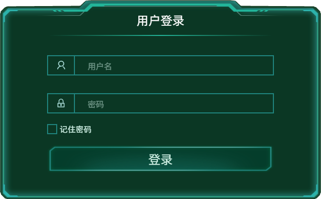
| 图标 | 按钮 / 控件 | 作用 | 说明 |
|---|---|---|---|
| 用户名输入框 | 输入登录账号 | 由管理员分配 | |
| 密码输入框 | 输入登录密码 | — | |
| 记住密码 | 勾选后，下次打开登录页自动填入账号和密码 | 公共电脑请勿勾选； 取消勾选并登录后会清除已保存的账号密码 |
登录结果：账号或密码为空时会提示“请输入账号/密码”；账号密码错误时提示“用户名或密码错误”；登录成功直接进入地图主页。
登录后页面顶部显示系统名称、日期时间，以及右侧的功能图标：
地图主页是系统总览页面：左侧是设备运行状态和报警列表，其余区域是厂区三维地图。
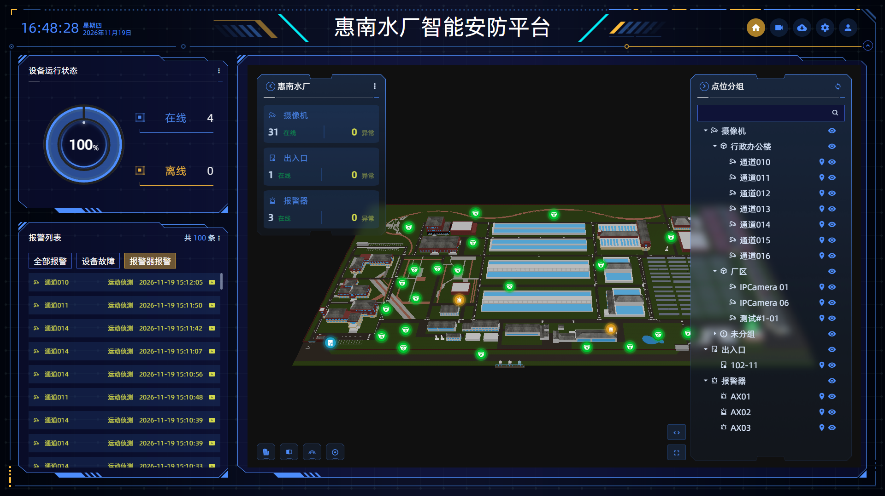
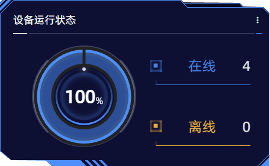
快捷操作
| 图标 | 按钮 / 控件 | 作用 | 说明 |
|---|---|---|---|
| 查看全部 | 打开全部设备列表 | 卡片右上角默认显示「⋮」图标，鼠标移到该区域时显示「查看全部」按钮 |
运行概况
| 按钮 / 控件 | 作用 | 说明 |
|---|---|---|
| 环形图 | 直观显示在线/离线设备占比 | 鼠标悬停可查看具体数值 |
| 在线 | 打开在线设备列表 | 点击后，弹窗中只显示在线设备 |
| 离线 | 打开离线设备列表 | 点击后，弹窗中只显示离线设备 |
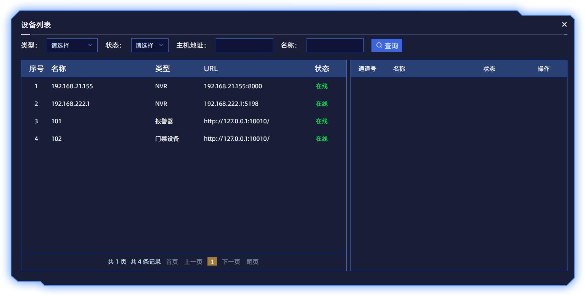
筛选条件
| 按钮 / 控件 | 作用 | 说明 |
|---|---|---|
| 类型 | 按设备类型筛选 |
选项为系统支持的设备类型，分视频设备（如硬盘录像机、摄像机）和 DB31
设备（如报警主机、门禁主机、传感器），具体名称以现场配置为准； 不选择表示全部类型 |
| 状态 | 按在线/离线筛选 | 选项为「在线」「离线」； 不选择表示全部状态 |
| 主机地址输入框 | 按设备地址查询 | 输入完整或部分地址 |
| 名称输入框 | 按设备名称查询 | 支持部分名称 |
设备详情
| 图标 | 按钮 / 控件 | 作用 | 说明 |
|---|---|---|---|
| 设备状态列 | 显示在线/离线 | ● 在线，● 离线 | |
| 视频预览 | 播放该通道的实时视频 | 通道离线时按钮置灰 |
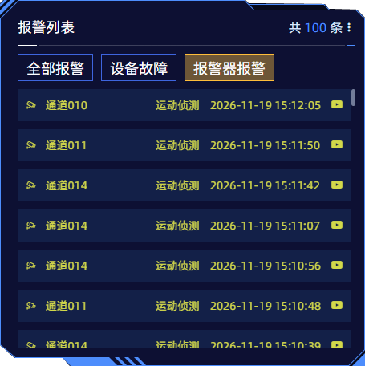
快捷操作
| 图标 | 按钮 / 控件 | 作用 | 说明 |
|---|---|---|---|
| 全部报警 | 显示所有类型的报警 | — | |
| 设备故障 | 只显示设备故障类报警 | 如离线、故障等 | |
| 报警器报警 | 只显示报警器触发的报警 | 默认选中； 如烟感、红外等 |
|
| 查看全部报警 | 打开完整的报警记录窗口 | 卡片右上角默认显示条目数和「⋮」图标，鼠标移到该区域时显示「查看全部报警」按钮 |
报警记录
| 图标 | 按钮 / 控件 | 作用 | 说明 |
|---|---|---|---|
| 报警记录行 | 显示图标、设备名称、类型、时间 | 鼠标悬停显示描述信息 | |
| 视频回放 | 回放该报警关联的视频 | 需要回放权限，否则不显示该按钮 |
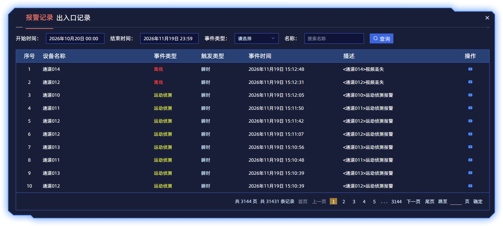
窗口顶部有「报警记录」「出入口记录」两个页签，分别用于查看报警/故障记录和门禁进出记录。
3.2.1.1 报警记录
显示设备的报警、故障记录。
筛选条件
| 按钮 / 控件 | 作用 | 说明 |
|---|---|---|
| 开始时间 / 结束时间 | 按时间段筛选报警记录 | 点击输入框选择日期和时间，精确到小时 |
| 事件类型 | 按报警事件类型筛选 | 选项为：上线、离线、运动侦测、报警器报警； 不选择表示全部类型 |
| 名称输入框 | 按设备名称搜索 | 支持部分名称 |
记录详情
3.2.1.2 出入口记录
显示出入口/门禁的进出记录。
筛选条件
| 按钮 / 控件 | 作用 | 说明 |
|---|---|---|
| 开始时间 / 结束时间 | 按时间段筛选出入口记录 | 点击输入框选择日期和时间，精确到小时 |
| 事件类型 | 按门禁事件类型筛选 | 选项为：人员进入、人员离开； 不选择表示全部类型 |
| 门禁名称输入框 | 按门禁名称搜索 | 支持部分名称 |
| 出入人员输入框 | 按进出人员姓名搜索 | 支持部分姓名 |
记录详情
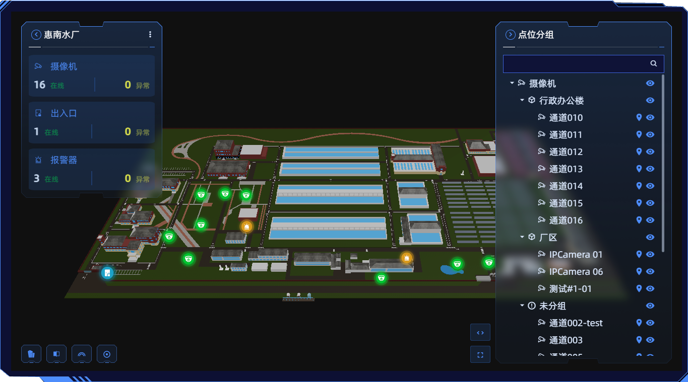
| 操作 | 作用 | 说明 |
|---|---|---|
| 按住鼠标左键拖动 | 平移地图 | 上下左右移动视角 |
| 按住鼠标右键拖动 | 旋转地图 | 调整观察角度 |
| 滚动鼠标滚轮 | 放大 / 缩小地图 | — |
| 单击建筑 | 选中并聚焦该建筑 | — |
| 双击建筑 | 展开建筑，显示楼层按钮 | — |
| 单击空白区域 | 取消当前选中 | — |
展开与全屏
| 图标 | 按钮 / 控件 | 作用 | 说明 |
|---|---|---|---|
| 展开 | 放大地图区域，左右面板收起 | — | |
| 还原（展开后） | 恢复地图区域和左右面板 | — | |
| 全屏 | 全屏显示地图 | — | |
| 还原（全屏后） | 退出全屏 | 按 Esc 也可以退出 |
地图上的每一个图标都是一个点位，对应摄像机、报警器、传感器、出入口等设备。点位用于在三维地图上快速找到设备、查看设备状态，并对设备执行预览、复位等操作。
异常点位显示为 ● 异常。具体使用见 3.3.3 三维地图使用说明。
系统中点位使用的图标如下：
| 图标 | 类型 | 说明 |
|---|---|---|
| 摄像机 | 双击播放实时视频（需要视频预览权限） | |
| 报警器 | 显示报警状态；双击复位报警（需要报警设置/控制权限） | |
| 传感器 | 显示设备状态；双击复位报警（需要报警设置/控制权限） | |
| 出入口 | 显示门禁设备状态；双击复位报警（需要报警设置/控制权限） |
三维地图的操作入口在左下角的按钮栏和地图内的点位上，先说明地图点位的交互，再按左下角按钮从左到右说明。
点击左下角第一个「建筑列表」按钮，地图上会显示厂区内所有建筑名称；再点一次同一个按钮收起列表。
展开建筑后，左下角显示楼层按钮和「返回」：
点击「渲染模式」按钮，在「实体」和「叠加」两种显示模式之间切换。
进入楼层后不能切换渲染模式。
区域联动用于查找能看到指定位置的摄像机，适合事发后快速找到附近的摄像机。
区域查找用于查找指定位置附近的点位，适合按距离查找摄像机和其他设备。
区域查找或区域联动完成后，地图上会弹出查找结果：
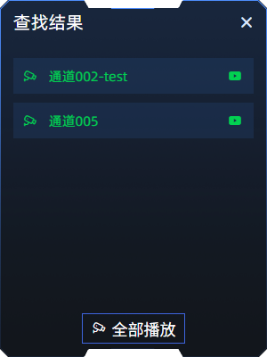
| 图标 | 按钮 / 控件 | 作用 | 说明 |
|---|---|---|---|
| 播放视频 | 播放该点位的视频 | 只对摄像机有效，其他类型按钮置灰 | |
| 全部播放 | 同时播放列表内所有摄像机 | 没有可播放的摄像机时按钮置灰 |
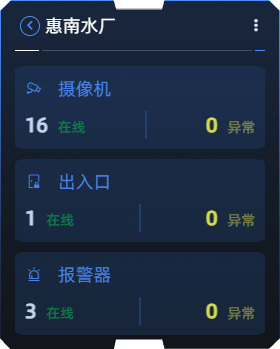
快捷操作
| 图标 | 按钮 / 控件 | 作用 | 说明 |
|---|---|---|---|
| 左上角折叠箭头 | 收起/展开统计面板 | 收起后只保留箭头按钮 | |
| 查看全部 | 打开全部类型的点位信息列表 | 面板右上角默认显示「⋮」图标，鼠标移到该区域时显示「查看全部」按钮 |
点位统计
| 按钮 / 控件 | 作用 | 说明 |
|---|---|---|
| 类型条目（摄像机/报警器/传感器/出入口） | 打开该类型的点位信息列表 | 条目上显示该类型的在线和异常数量 |
| 在线 | 该类型中状态正常的数量；点击打开该类型的在线点位信息列表 | 只统计当前账号有权限的摄像机 |
| 异常 | 该类型中离线 + 报警的数量；点击打开该类型的离线点位信息列表 | 列表按离线状态筛选 |
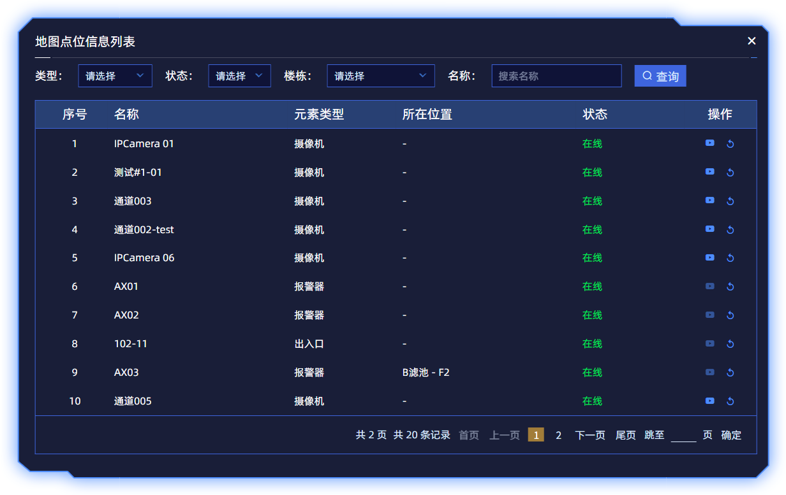
列表列：序号、名称、点位类型、所在位置、状态、操作。状态：● 在线，● 离线，● 报警。
筛选条件
| 按钮 / 控件 | 作用 | 说明 |
|---|---|---|
| 类型 | 按点位类型筛选 | 如摄像机、报警器、传感器、出入口 |
| 状态 | 按点位状态筛选 | 选项为「在线」「离线」「报警」； 不选择表示全部状态 |
| 楼栋 | 只看指定楼栋内的点位 | 不选择表示全部 |
| 名称输入框 | 按点位名称搜索 | 支持部分名称 |
点位详情
| 图标 | 按钮 / 控件 | 作用 | 说明 |
|---|---|---|---|
| 视频预览 | 播放该点位视频 | 非摄像机点位或摄像机离线时置灰 | |
| 重置状态 | 复位该点位的报警状态 | 仅拥有报警设置/控制权限时显示 |
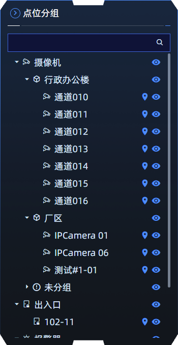
快捷操作
| 图标 | 按钮 / 控件 | 作用 | 说明 |
|---|---|---|---|
| 右上角折叠箭头 | 收起/展开点位分组面板 | 为地图让出空间 | |
| 同步点位名称 | 仅管理员可见 | 把地图点位名称同步为绑定设备/通道的名称，详见「七、管理员权限 → 7.3 点位名称同步」 |
点位分组
隐藏的点位不在地图上显示。
| 图标 | 按钮 / 控件 | 作用 | 说明 |
|---|---|---|---|
| 搜索框 | 按点位名称过滤树节点 | 输入后按回车或点击放大镜； 点击「×」清空并还原 |
|
| 节点前的箭头 | 展开/收起该分组 | 区域节点可逐级展开 | |
| 定位 | 在地图上定位到该点位 | 点位被隐藏时按钮置灰； 定位会自动进入所在楼层 |
|
| 显示 | 当前为显示状态 |
点击后隐藏该点位； 分组上显示此图标表示该分组内还有点位显示，点击隐藏该分组下全部点位。 |
|
| 隐藏 | 当前为隐藏状态 |
点击后显示该点位； 分组上显示此图标表示该分组内点位全部隐藏，点击显示该分组下全部点位。 |
操作
| 操作 | 作用 | 说明 |
|---|---|---|
| 双击摄像机 | 播放该摄像机的实时视频 | 需要视频预览权限 |
有新报警时，地图上对应点位会变为异常状态并闪烁，同时弹出报警联动视频窗口：
| 按钮 / 控件 | 作用 | 说明 |
|---|---|---|
| 自动关闭 | 勾选后倒计时结束自动关闭弹窗 | 默认勾选，倒计时 30 秒； 取消勾选后弹窗保持显示 |
| 倒计时 | 显示剩余自动关闭时间 | 每次报警弹出时重新计时 |
| 视频画面 | 显示报警联动的摄像机实时画面 | 只显示当前账号有权限的通道 |
用于播放单路实时视频或录像回放：
| 图标 | 按钮 / 控件 | 作用 | 说明 |
|---|---|---|---|
| 预览 | 切换到实时预览 | 仅回放模式且账号有预览权限时显示 | |
| 回放 | 切换到录像回放 | 仅预览模式且账号有回放权限时显示 | |
| 日期 | 选择回放日期 | 点击输入框弹出日历，选择后自动填入（回放模式） | |
| 时间范围 | 设置回放的开始时间和结束时间 | 可直接输入数字，或在数字上滚动鼠标滚轮调整（回放模式） |
点击顶部「视频」图标进入视频页面，页面上方有「视频预览」「视频回放」两个页签。
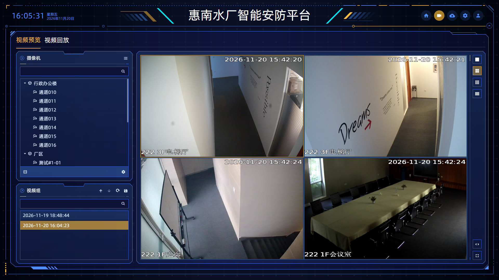
快捷操作
| 图标 | 按钮 / 控件 | 作用 | 说明 |
|---|---|---|---|
| 折叠箭头 | 收起/展开摄像机列表面板 | 收起后下方视频组列表变大 | |
| 树形图标（多层） | 切换到按区域分组的树形列表 | 只显示有摄像机的区域 | |
| 列表图标（列表） | 切换到平铺的摄像机列表 | — |
摄像机列表
| 图标 | 按钮 / 控件 | 作用 | 说明 |
|---|---|---|---|
| 搜索框 | 按名称查找摄像机 | 点击放大镜查询，点击「×」清空并还原 | |
| 区域节点前的箭头 | 展开/收起区域 | 树形模式下使用 | |
| 全部折叠 | 收起所有区域 | 树形模式下使用 | |
| 配置区域资源 | 打开区域资源配置窗口 | 仅有配置权限的账号显示（同「区域资源设置」功能） |
操作
| 操作 | 作用 | 说明 |
|---|---|---|
| 双击摄像机 | 播放该摄像机 | 播放到当前选中的画面窗口 |
| 图标 | 按钮 / 控件 | 作用 | 说明 |
|---|---|---|---|
| 单画面 | 切换为 1 画面 | 只保留当前选中的画面 | |
| 四画面 | 切换为 4 画面 | 从少画面切过来时，已播放的画面保持不变； 从多画面切过来时，只保留靠前的 4 个画面 |
|
| 九画面 | 切换为 9 画面 | 从少画面切过来时，已播放的画面保持不变； 从多画面切过来时，只保留靠前的 9 个画面 |
|
| 十六画面 | 切换为 16 画面 | 从少画面切过来时，已播放的画面保持不变 | |
| 展开 | 放大播放器 | 收起左侧面板，播放器占满内容区 | |
| 还原（展开后） | 恢复播放器 | 恢复左侧面板 | |
| 全屏 | 全屏播放 | — | |
| 还原（全屏后） | 退出全屏 | 按 Esc 也可退出 | |
| 画面控制条 | 播放/暂停、关闭该路视频等 | 由播放器自带，鼠标移到画面上显示 |
操作
| 操作 | 作用 | 说明 |
|---|---|---|
| 单击画面窗口 | 选中该画面 | 选中的画面带高亮边框，双击左侧摄像机时会播放到该窗口 |
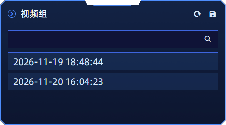
视频组用于保存常用的多画面组合，值守时可一次调出整组画面。把当前正在播放的画面组合保存为视频组，使用视频组面板右上角的「保存到视频组」按钮。
操作步骤
快捷操作
| 图标 | 按钮 / 控件 | 作用 | 说明 |
|---|---|---|---|
| 折叠箭头 | 收起/展开视频组面板 | — | |
| 排序前移（上箭头） | 把选中的视频组向前移动一位 | 选中视频组且列表有多项时可用 | |
| 排序后移（下箭头） | 把选中的视频组向后移动一位 | — | |
| 顺序播放 | 按列表顺序循环播放所有视频组 | 列表中有视频组时才显示； 再次点击停止，按钮高亮表示正在循环 |
|
| 保存到视频组 | 把当前正在播放的画面组合保存为一个视频组 | 位于视频组面板右上角按钮组最右侧； 默认以当前时间命名，没有画面在播放时按钮置灰 |
视频组列表
鼠标移到视频组行上，行右侧会显示播放、改名、删除按钮：
| 图标 | 按钮 / 控件 | 作用 | 说明 |
|---|---|---|---|
| 搜索框 | 按名称查找视频组 | 点击放大镜查询，点击「×」清空并还原 | |
| 播放视频组 | 播放该视频组 | 同双击 | |
| 修改视频组名称 | 把名称变成输入框 | 修改后点「√」保存，点「×」取消 | |
| 删除视频组 | 删除该视频组 | 弹出确认框，点「确定」删除、「取消」放弃 |
点击铅笔图标修改名称：名称变成输入框后，点「√」保存，点「×」取消。
操作
| 操作 | 作用 | 说明 |
|---|---|---|
| 双击视频组 | 播放整组画面 | 按保存时的画面数自动切换布局 |
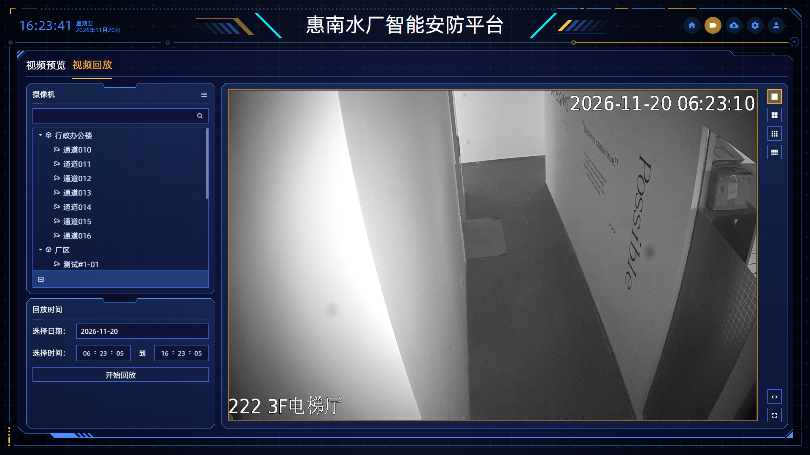
| 按钮 / 控件 | 作用 | 说明 |
|---|---|---|
| 选择日期 | 选择回放日期 | 点击输入框弹出日历，选择某一天后自动填入 |
| 选择时间（两个时间框） | 设置回放开始和结束时间 |
分别输入时、分、秒； 可直接输入数字，也可在数字上滚动鼠标滚轮增减； 开始时间不能晚于结束时间，超出会自动收敛 |
| 开始回放 | 播放所选时段录像 | 需要回放权限和该通道权限 |
| 播放器控制条 | 播放/暂停、拖动进度等 | 鼠标移到画面上显示 |
拥有视频下载权限时，点击顶部「下载」图标，会在新标签页打开视频下载页面。
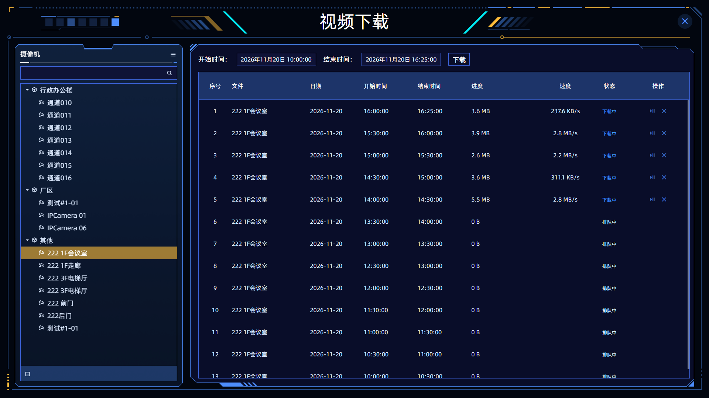
左侧摄像机列表的树形/列表切换、搜索框与视频页「摄像机」列表面板相同，见 4.1.1。
| 按钮 / 控件 | 作用 | 说明 |
|---|---|---|
| 开始时间 | 设置下载片段的开始时间 | 点击输入框选择日期和时间，精确到小时 |
| 结束时间 | 设置下载片段的结束时间 | 默认是最近 30 分钟； 结束时间需晚于开始时间 |
| 下载 | 创建下载任务 | 未选择摄像机或时间不合法时置灰 |
| 状态 | 可执行的操作 | 说明 |
|---|---|---|
| 排队中 | 等待自动开始 | 同时下载数达到上限时会排队 |
| 下载中 | 暂停、取消 | 「暂停」保留已下载的进度，点「开始」从断点继续； 「取消」停止并删除任务 |
| 已暂停 | 开始、取消 | 「开始」继续下载 |
| 保存中 | 等待完成 | 下载完成后写入文件 |
| 已完成 | 重新下载、删除 | 「重新下载」重新发起同一时间段的任务 |
| 失败 | 重试、删除 | 状态列会显示失败原因，可点「重试」重新下载 |
下载完成后，文件名由「摄像机名称 + 录像时间段 + .mp4」组成，格式为：
摄像机名称_开始时间_结束时间.mp4
示例：摄像机「1号门摄像机」下载 2026 年 11 月 23 日 14:00:00 至 14:30:00
的录像，文件名为：
1号门摄像机_20261123140000_20261123143000.mp4
时间范围超过 30 分钟时会拆成多个文件，每个文件只包含一段录像，文件名中的时间段就是这一段的时间。例如下载 14:00:00 至 14:40:00，会得到两个文件：
点击顶部「设置」图标进入设置页面：
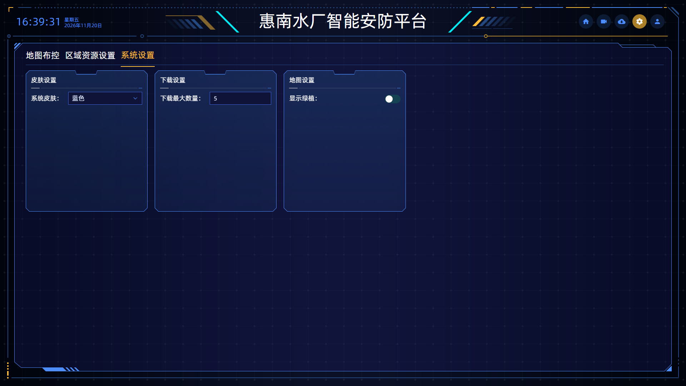
皮肤设置
| 按钮 / 控件 | 作用 | 说明 |
|---|---|---|
| 系统皮肤 | 切换系统配色 | 可选绿色、蓝色，推荐使用蓝色； 切换后立即生效 |
下载设置
| 按钮 / 控件 | 作用 | 说明 |
|---|---|---|
| 下载最大数量 | 设置同时下载的最大任务数 | 范围 1～5； 可直接输入或在数字上滚动滚轮调整； 仅拥有下载权限时显示 |
地图设置
| 按钮 / 控件 | 作用 | 说明 |
|---|---|---|
| 显示绿植 | 控制三维地图中是否显示树木绿植 | 打开/关闭后地图刷新显示 |
仅系统管理员可用的功能。非管理员账号看不到设置页的「地图布控」「区域资源设置」页签，直接输入这两个页面的地址也会自动回到「系统设置」；管理员拥有全部功能权限和全部通道权限。
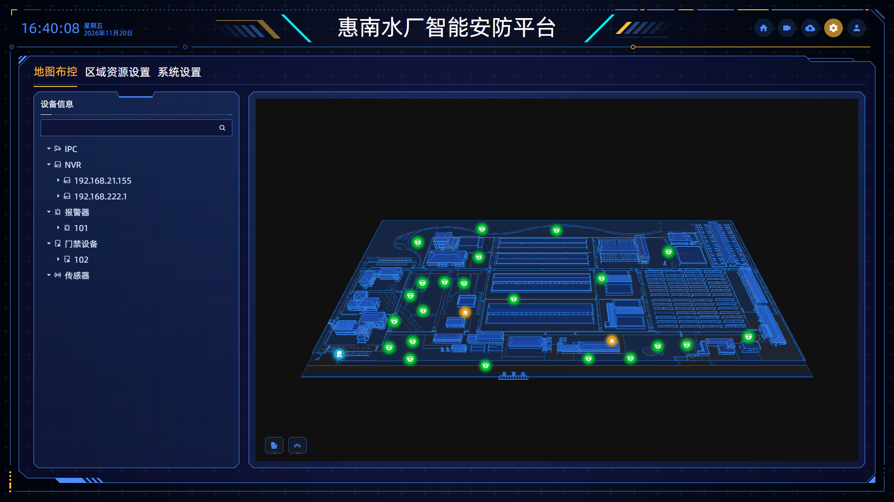
用于把设备绑定到三维地图上、解除绑定或调整位置。
| 图标 | 按钮 / 控件 | 作用 | 说明 |
|---|---|---|---|
| 搜索框 | 按名称查找设备 | 点击放大镜查询，点击「×」清空并还原 | |
| 节点前箭头 | 展开/收起设备和通道 | — | |
| 定位 | 在地图上定位到该设备已绑定的点位 | 未绑定的设备没有定位按钮 | |
| 绑定 | 进入绑定状态 | 鼠标移到地图上会跟随一个半透明图标，在目标位置单击左键完成绑定； 单击右键取消 |
|
| 解绑 | 解除设备与地图点位的绑定 | 弹出确认框，点「确定」解绑、「取消」放弃 |
| 图标 | 按钮 / 控件 | 作用 | 说明 |
|---|---|---|---|
| 建筑列表 | 显示/收起建筑列表 | 与主页地图一致 | |
| 摄像机视野（显示） | 显示摄像机的监控视野 | 用于核对点位朝向 | |
| 摄像机视野（隐藏） | 隐藏摄像机的监控视野 | 用于核对点位朝向 | |
| 建筑名称按钮 | 单击定位，双击展开建筑 | — | |
| 楼层按钮 / 返回 | 切换楼层 / 回到厂区 | — |
操作
| 操作 | 作用 | 说明 |
|---|---|---|
| 拖动摄像机点位的扇形手柄 | 调整监控范围和朝向 | 拖动扇形边缘的角点调整半径和角度，拖动弧中点旋转朝向； 调整后自动保存 |
| 双击点位 | 在左侧设备树中定位对应设备 | 没有绑定通道的点位会提示是否删除 |
解除绑定
调整摄像机视野
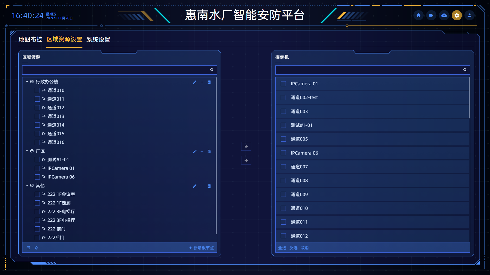
用于维护「区域资源」树，并把摄像机分配到各区域。视频页的摄像机分组、地图右侧的点位分组都按这里配置的区域显示。
常用操作步骤
| 图标 | 按钮 / 控件 | 作用 | 说明 |
|---|---|---|---|
| 搜索框 | 按名称查找区域或资源 | 点击放大镜查询，点击「×」清空并还原 | |
| 节点前箭头 | 展开/收起子节点 | — | |
| 修改 | 把节点名称变成输入框 | 修改后点「√」保存，点「×」取消； 保存后立即生效 |
|
| 添加 | 在该节点下新增子节点 | 输入名称后点「√」保存，点「×」取消 | |
| 删除 | 删除该节点 | 弹出确认框，点「确定」删除、「取消」放弃 | |
| 节点复选框 | 多选资源 | 用于一次移出多个摄像机（导出） | |
| 全部折叠 | 收起所有节点 | — | |
| 同步摄像机名称 | 用摄像机通道名称统一更新区域资源名称 | 弹出确认框； 完成后提示成功/失败数量 |
|
| 新增根节点（加号 + 文字） | 在树的最下方新增顶层区域 | 输入名称后保存 | |
| 左箭头「导入」 | 把右侧勾选的摄像机分配到左侧选中/勾选的区域 | 左侧必须选中一个区域节点； 成功后右侧列表减少、左侧出现该摄像机 |
|
| 右箭头「导出」 | 把左侧勾选（或选中）的摄像机移出所在区域 | 资源节点回到右侧摄像机列表 |
| 图标 | 按钮 / 控件 | 作用 | 说明 |
|---|---|---|---|
| 搜索框 | 按名称查找摄像机 | 点击放大镜查询，点击「×」清空并还原 | |
| 摄像机复选框 | 勾选要分配的摄像机 | 可多选 | |
| 全选 | 勾选列表中全部摄像机 | — | |
| 反选 | 勾选状态反转 | — | |
| 取消 | 清空所有勾选 | — |
操作
| 操作 | 作用 | 说明 |
|---|---|---|
| 鼠标悬停摄像机行 | 显示所属设备名称和通道名称 | 方便区分同名通道 |
三维地图「点位分组」面板右上角的同步按钮仅管理员可见，用于把地图点位名称同步为点位绑定设备/通道的名称。
操作步骤
| 图标 | 按钮 / 控件 | 作用 | 说明 |
|---|---|---|---|
| 同步点位名称 | 把地图点位名称同步为绑定设备/通道的名称 | 点击后先弹框确认，确认后执行； 完成后提示成功/失败数量 |
确认账号、密码大小写及输入法状态；仍无法登录请联系系统管理员重置密码。
说明当前账号没有对应权限，或者没有该摄像机的通道权限，请联系系统管理员开通。
先确认摄像机是否在线（地图上显示为异常）。摄像机在线仍无法播放时，通常是没有该通道的权限； 另外，播放窗口已满或未选中画面窗口时，双击摄像机也可能不生效，可先单击一个画面再双击摄像机。
可能是设备未绑定点位、没有通道权限，或所在楼层未展开。可先在右侧「点位分组」中搜索该设备； 仍找不到请联系管理员在「地图布控」中检查绑定关系。
三维地图首次加载需要下载模型，请耐心等待；建议使用 Chrome 或 Edge 浏览器，并确保网络畅通。 页面长时间无响应时可刷新页面重试。
该提示表示报警和设备状态可能无法实时刷新。请检查本机网络是否正常，系统会自动重连； 长时间未恢复请联系管理员检查服务端。
同时下载任务数已达到上限，等待前面的任务完成或暂停后会自动开始； 也可以在「设置 → 系统设置 → 下载设置」中调整最大数量（需要下载权限）。